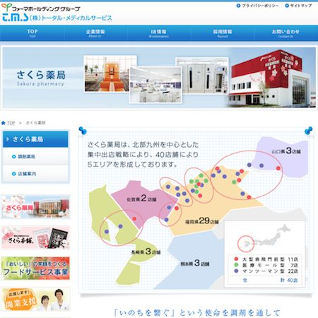

- 福岡市東区
- 和白
- 整形外科
- 一般整形外科
- スポーツ整形外科
- リウマチ科
- 骨粗鬆症
- メタボリックシンドローム
- 巻爪手術
- 物理療法
- 五十肩
まつもと整形外科クリニック
〒811-0213
福岡市東区和白丘2-3-7
TEL: 092-605-6006 / FAX: 092-605-6007
092-605-6006
リンク
福岡和白病院
福岡市東区の総合病院です。地域の医療施設・福祉施設と密接な連携を推進しています。
さくら薬局
全国展開の薬局です。「いのちを繋ぐ」という使命を、調剤を通して実践し続けていることに胸を張りたい。と考えている薬局です。
吉永眼科クリニック
福岡市東区和白丘の眼科です。地域の皆様の健康をお守りし、「安心・安全」を大切にしているクリニックです。
日本整形外科学会
整形外科学に関する研究発表、連絡、提携および研究の促進を図り、整形外科学の進歩普及に貢献し、もって学術文化の発展に寄与することを目的に設立されました。

日本骨粗鬆症学会
骨粗鬆症(骨粗しょう症)に関わる基礎・臨床の諸問題、社会的貢献についての研究と情報交換を行うことを目的に設立されました。
日本義肢製作所(JPF)
義肢装具製造及び健康靴下「ソリックス」販売の日本義肢製作所です。
日本整形外科スポーツ医学会
整形外科学及び運動器科学領域におけるスポーツ医学の進歩普及に貢献し、心身の健全な発達、スポーツ外傷・障害の予防と治療等に寄与できるよう、日夜研鑽を深めております。
日本臨床スポーツ医学会
臨床スポーツ医学領域における研究の促進と情報交換を図り、スポーツ医学の進歩・普及とスポーツの発展に寄与することを目的に設立されました。